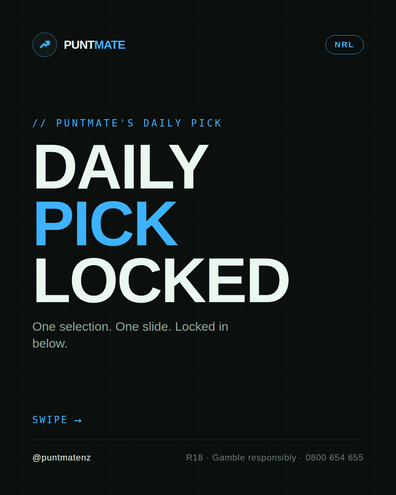
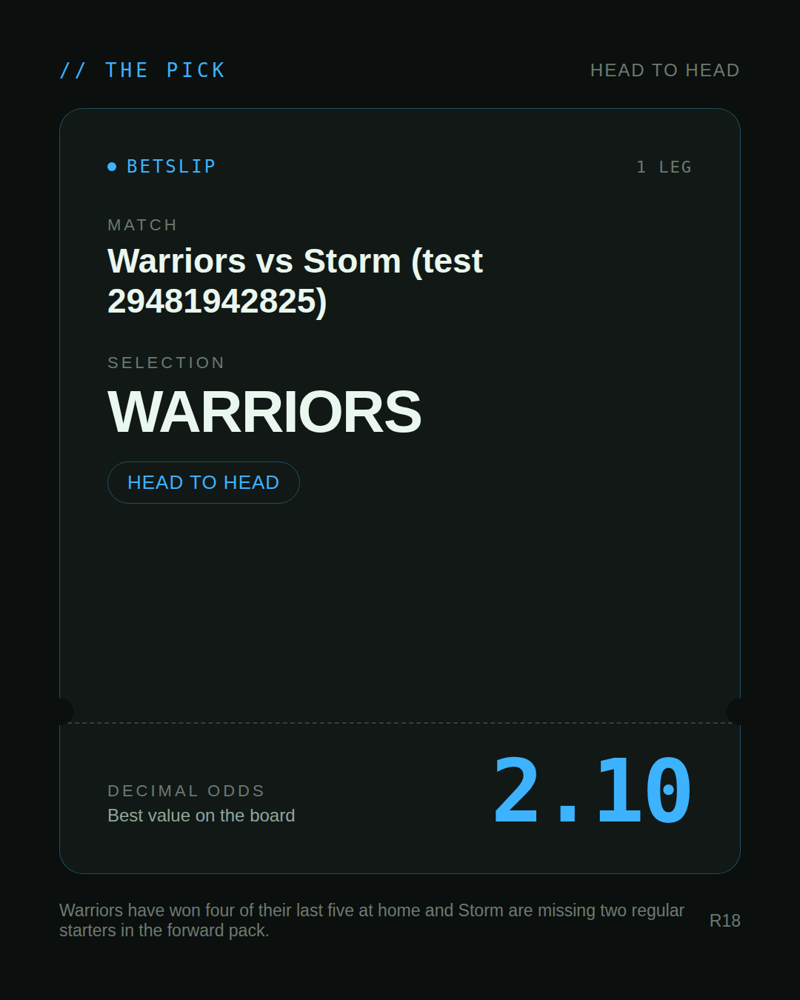
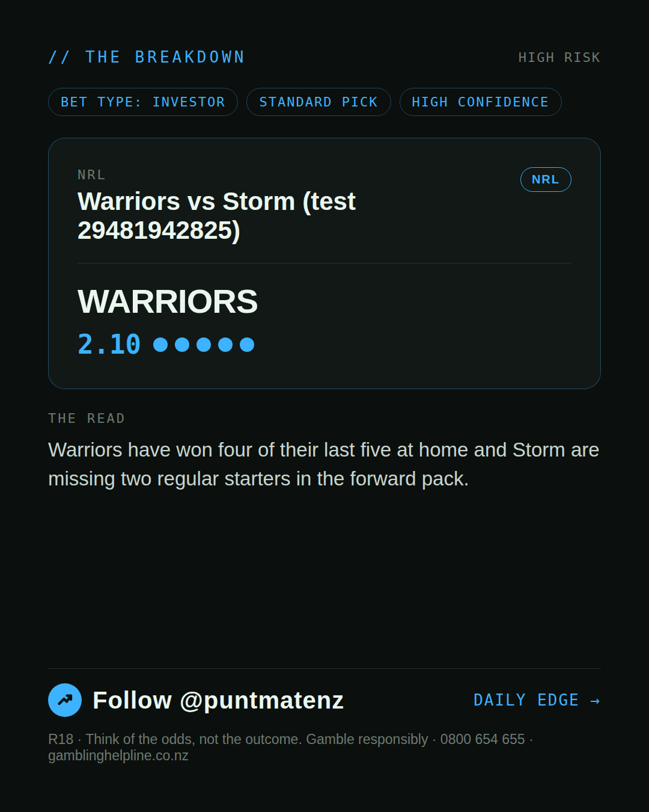
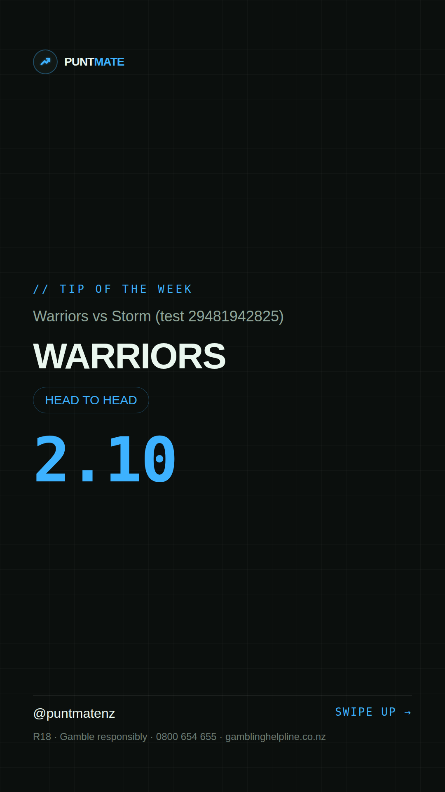

*🎯 PUNTMATE NZ — NRL* 🏟 Warriors vs Storm (test 29481942825) *PICK:* WARRIORS *ODDS:* 2.10 (Head to Head) *BET TYPE: INVESTOR* _Warriors have won four of their last five at home and Storm are missing two regular starters in the forward pack._ ────────────────── 📲 Join Telegram for daily picks R18 · Gamble responsibly · Problem Gambling Foundation NZ: 0800 664 262
🎯 NRL — Warriors vs Storm (test 29481942825) WARRIORS @ 2.10 (Head to Head) BET TYPE: INVESTOR This one's about as close to a sure thing as sport gets — the numbers stack up and the price still pays. Warriors have won four of their last five at home and Storm are missing two regular starters in the forward pack. Follow for daily value picks → @puntmatenz Problem Gambling Foundation NZ: 0800 664 262 #PuntmateNZ #SportsBetting #NZTAB #NRL
| has_pick | True |
| pick_id | 2026-07-16_Warriors_vs_Storm_test_29481942825 |
| run_id | 29481942825 |
| generated_at | 2026-07-16T08:02:09.162535+00:00 |
| post_date | 2026-07-16 |
| match | Warriors vs Storm (test 29481942825) |
| sport | rugbyleague_nrl |
| sport_label | NRL |
| market | Head to Head |
| selection | WARRIORS |
| odds | 2.10 |
| bet_type | INVESTOR_BET |
| bet_type_label | BET TYPE: INVESTOR |
| bet_type_reason | This one's about as close to a sure thing as sport gets — the numbers stack up and the price still pays. Warriors have won four of their last five at home and Storm are missing two regular starters in the forward pack. |
| classification | STANDARD_PICK |
| risk | STANDARD_PICK |
| confidence | HIGH |
| confidence_label | HIGH |
| final_explanation | Warriors have won four of their last five at home and Storm are missing two regular starters in the forward pack. |
| public_caution | None |
| theme | night |
| carousel_paths | ['data/review/2026-07-16_Warriors_vs_Storm_test_29481942825/cover.png', 'data/review/2026-07-16_Warriors_vs_Storm_test_29481942825/tip.png', 'data/review/2026-07-16_Warriors_vs_Storm_test_29481942825/breakdown.png'] |
| carousel_urls | ['https://raw.githubusercontent.com/kingofthecastle24/puntmate/main/data/cards/2026-07-16_Warriors_vs_Storm_test_29481942825_night_1_cover.png', 'https://raw.githubusercontent.com/kingofthecastle24/puntmate/main/data/cards/2026-07-16_Warriors_vs_Storm_test_29481942825_night_2_tip.png', 'https://raw.githubusercontent.com/kingofthecastle24/puntmate/main/data/cards/2026-07-16_Warriors_vs_Storm_test_29481942825_night_3_breakdown.png'] |
| story_path | data/review/2026-07-16_Warriors_vs_Storm_test_29481942825/story.png |
| story_url | https://raw.githubusercontent.com/kingofthecastle24/puntmate/main/data/cards/2026-07-16_Warriors_vs_Storm_test_29481942825_night_story.png |
| intended_platforms | ['telegram', 'instagram_feed', 'instagram_story', 'facebook'] |
| workflow_state | GENERATED |